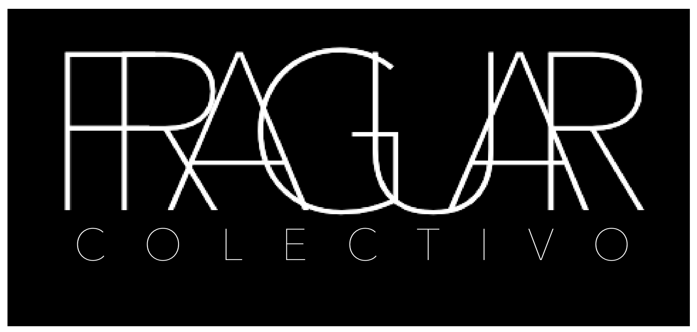

FRAGUA
Susurros. Voces ocultas
Afinando la escucha…
BITÁCORA DE UNA INVESTIGACIÓN
EDICIÓN 0.3
Una investigación de Fragua
Las palabras aparecerán a medida que se revisen los materiales.
FRAGUA
Susurros. Voces ocultas
Afinando la escucha…